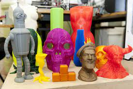
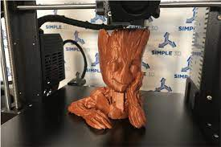
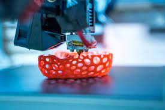
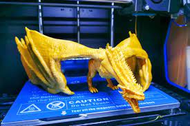
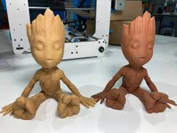
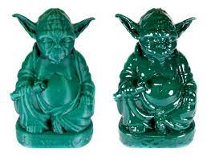
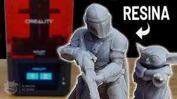
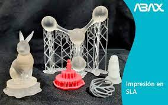

Foto ejemplo 1:
Un soporte para teléfono móvil: este soporte se ha diseñado y creado en 3D FDM para sujetar su teléfono móvil mientras trabaja o ve vídeos. Fabricado en un material resistente y duradero, puede personalizarse en diferentes colores y tamaños para adaptarse a sus necesidades.

Foto ejemplo 2:
Un juguete impreso en 3D: un muñeco de acción, un rompecabezas o un juguete educativo, los juguetes impresos en 3D pueden ser personalizados en función de los intereses y la edad del usuario. Además, la tecnología de impresión 3D FDM permite crear juguetes resistentes y duraderos.

Foto ejemplo 3:
Un prototipo de pieza mecánica: los prototipos impresos en 3D son útiles para la industria automotriz y otros sectores que requieren la creación de piezas mecánicas. Con la impresión 3D FDM, es posible crear prototipos rápidamente y a un costo reducido, lo que permite a las empresas ahorrar tiempo y dinero.

Foto ejemplo 4:
Una maqueta arquitectónica: las maquetas arquitectónicas impresas en 3D son una herramienta útil para los arquitectos y los diseñadores. La impresión en 3D FDM permite crear maquetas detalladas y precisas de edificios y estructuras, lo que permite a los arquitectos y diseñadores presentar su trabajo de una manera visualmente impresionante y clara.

Foto ejemplo 5:
Una carcasa de teléfono móvil personalizada: la impresión en 3D FDM permite personalizar y crear carcasas de teléfono móvil únicas y personalizadas. Además, los materiales utilizados para la impresión en 3D FDM son duraderos y resistentes, lo que garantiza que la carcasa sea resistente a los golpes y arañazos.

Foto ejemplo 6:
Una pieza de arte decorativa: la impresión en 3D FDM también se puede utilizar para crear piezas de arte decorativas. Las posibilidades creativas son infinitas, desde esculturas abstractas hasta formas geométricas intrincadas. Los objetos impresos en 3D FDM se pueden personalizar en diferentes colores y tamaños para adaptarse a cualquier espacio y decoración.

Foto ejemplo 7:
Una figura coleccionable: las figuras coleccionables son uno de los objetos más populares impresos en resina. La tecnología de impresión en resina permite una gran precisión y detalles finos, lo que hace que las figuras sean de alta calidad y muy detalladas.

Foto ejemplo 8:
Joyería personalizada: la impresión en resina es ideal para la creación de joyería personalizada. La resina se puede imprimir en diferentes colores y texturas, lo que permite una gran variedad de opciones para los clientes que buscan piezas de joyería únicas y personalizadas.